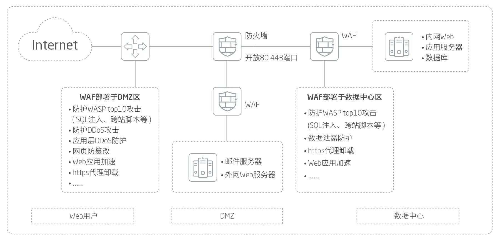

产品概述
随着Web应用日益丰富，Web服务器凭借其高价值、强性能的特点成为不法分子的主要攻击目标。然而目前安全设备对Web应用攻击防护能力的不足，诱发了一系列热点问题，如SQL注入攻击、网页篡改、网页挂马等。基于多年对Web安全问题的潜心研究与经验积累， 赛博特安新一代Web安全产品 Web应用防护系统信创版本应运而生， 对Web安全防护需求进行进一步升级。 赛博特安WAF产品硬件平台选用国产处理器（兆芯），软件平台基于国产操作系统（中标麒麟）。赛博特安WAF产品提供了Web应用攻击防护能力，通过多种机制的分析检测，赛博特安WAF产品的技术能够有效的阻断攻击，保证Web应用合法流量的正常传输，有效保障业务系统的运行连续性和完整性。
应用价值
赛博特安 Web应用防护系统为客户提供综合Web应用安全解决方案，作为网关设备为Web、Webmail服务器等B/S架构业务服务器提供安全防护。针对安全事件发生时序进行安全建模，分别针对安全漏洞、攻击手段及最终攻击结果进行扫描、防护及诊断。
产品亮点
全方位Web安全防护
防护系统可对Web服务器提供7层全面防护。精细化的规则配置，发挥安全防护功能，有效应对OWASP Top10定义的威胁及其变种。
完整的网页防篡改方案
赛博特安WAF产品集成了网页防篡改功能，可集中管理控制各个网页防篡改端点，并提供监控、同步、发布功能。基于文件夹驱动级保护技术，事件触发机制，只占用极少的系统资源。网页防篡改（端点技术）与WAF联动，阻断Web威胁。采用文件级驱动保护技术。支持Windows 2000/xp/2003/2008/2012(32和64位), Linux/BSD系统的网页防篡改。
安全情报中心
内置威胁情报管理中心，同国际主流数据源、国内情报源进行对接，获取威胁情报。通过情报中心，可以基于实时更新的问题IP、黑链进行动态防护，并通过多样化的图表进行数据展示。更加准确的进行防护与溯源。
配置简单，防护立体
集成了赛博特安研发的Web漏洞扫描系统，提前发现安全隐患并提醒客户；对HTTP协议包中各项参数进行合规性控制；内置八大类特征库，通过匹配对攻击执行相应的处理；针对暗藏陷阱，对目标URL进行包装，使爬虫攻击无法生效，杜绝爬虫威胁；集成了服务器负载均衡功能，提供HTTPS卸载和HTTPS加速应用，为客户提供无缝HTTPS服务。
轻松适配
赛博特安WAF产品可适应各种网络环境，支持链路聚合、VLan、ARP配置等功能，可无缝部署到客户的网络中。支持Trunk链路防护。支持IPV6的防护，可以适应各种网络环境。
应用场景

产品规格
| 产品型号 | WAF7000 |
| 产品形态 | 2U |
| 接口规格 | 6个千兆电口+4SFP |
| 扩展槽 | 2个插拔扩展槽 |
| 电源 | 双冗余电源 |
| 硬件 | 兆芯处理器 |
| 操作系统 | 中标麒麟 |